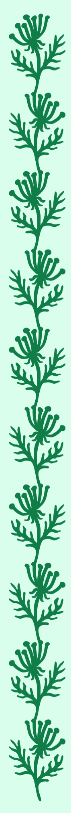

+57 (300) 528 3431
+57 (300) 528 3431 juanjhernandezs1@gmail.com jhernandez23a@udenar.edu.co
juanjhernandezs1@gmail.com jhernandez23a@udenar.edu.coIEM Ciudadela Educativa de Pasto
Bachiller Academico (2022)SENA
Técnico en Sistemas (2020 - 2022)Universidad de Nariño Ingenieria de Sistemas (2023 - Actual)

Soy estudiante de Ingeniería de Sistemas con un gran interés por el desarrollo de software, creación de aplicaciones web. Me considero una persona proactiva, con facilidad para aprender nuevas tecnologías y adaptarme a diferentes entornos de trabajo.
Durante mi formación académica he desarrollado proyectos que me han permitido fortalecer mis habilidades en resolución de problemas, pensamiento lógico y trabajo en equipo. Me motiva enfrentar nuevos retos que me permitan aplicar mis conocimientos y, al mismo tiempo, aprender de la experiencia.
| Lenguaje | Nivel de manejo |
|---|---|
| Python | Alto |
| HTML | Medio |
| JavaScript | Bajo |